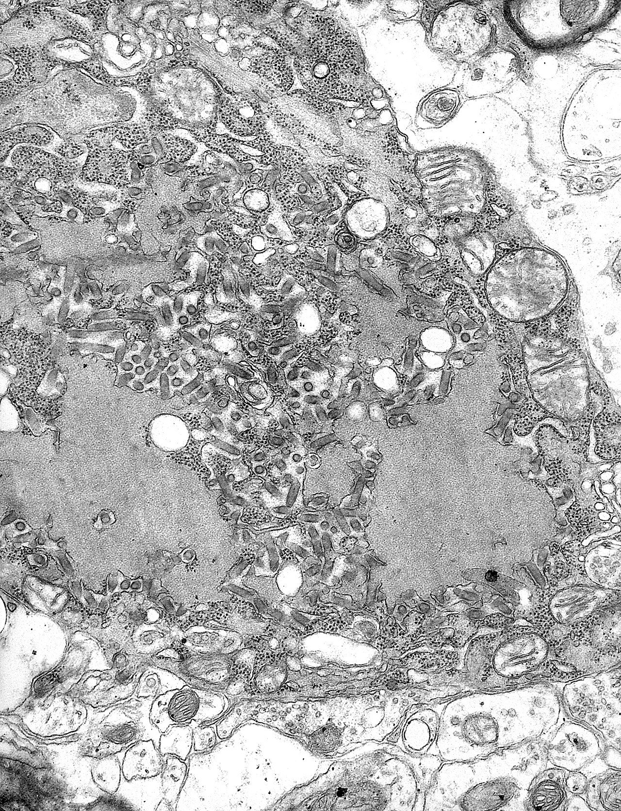
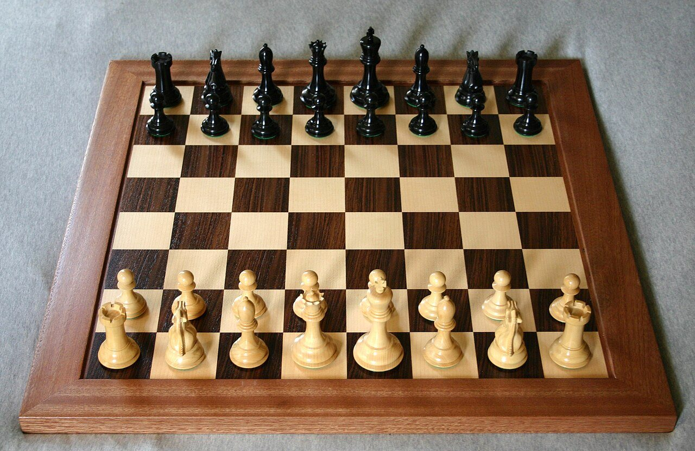

Hobbies and Interests
Three things I do when I am not writing code, and all three are the reason I write the code I do.

Studying Astronomy
Astronomy is the hobby that pulled me toward space systems in the first place. I spend evenings reading survey papers, working through orbital mechanics problems and tracking what the James Webb and Hubble telescopes have released this month.
It is also the hobby that feeds back into my work. The CubeSat remote sensing simulation and the StellarTrace search engine both started as curiosity about how we collect and index what we observe.
- A day on Venus is longer than its year. Venus rotates once every 243 Earth days but orbits the Sun in 225, and it spins backwards.
- Neutron star matter is impossibly dense. A single teaspoon weighs roughly a billion tonnes, about the mass of Mount Everest.
- The Milky Way and Andromeda will merge. In about 4.5 billion years, though the stars are so sparse that almost none will collide.
- Sunlight is thousands of years old. A photon takes 8 minutes to reach us, but spent millennia scattering out of the Sun's core.

Reading About the Rabies Virus
My second obsession is virology, and specifically the rabies virus. It is the most lethal virus known to medicine and yet almost entirely preventable, and that contradiction is what keeps me reading about it.
What fascinates me is the mechanism. The virus avoids the bloodstream entirely and travels along peripheral nerves to the brain, which is why it stays invisible to the immune system for so long and why vaccination still works after a bite.
- Roughly 100% fatal once symptoms appear. Fewer than twenty unvaccinated survivors have ever been documented.
- It travels by nerve, not by blood. Retrograde axonal transport carries it to the brain at 12 to 100 mm a day.
- The incubation period can last months. Which is exactly why post exposure treatment works, there is time to beat it there.
- The bullet shape is diagnostic. Rhabdoviruses are instantly recognisable in an electron micrograph, like the one shown here.

Playing Chess
Chess is what I play when I want the same feeling as debugging without the debugger. Calculate the forcing lines first, evaluate the resulting position honestly, and accept that a plan built on a wrong assumption collapses however elegant it looked.
I play mostly rapid, with a stubborn preference for closed positions where the game is decided by structure rather than tactics. Studying endgames has been the single biggest improvement to my play, and to my patience.
- The opening move count explodes immediately. There are 400 distinct positions after one move each, and over 9 million after three.
- The Shannon number dwarfs the universe. Around 10^120 possible games, against roughly 10^80 atoms in the observable universe.
- The longest forced mate runs 549 moves. Found by endgame tablebases, and entirely incomprehensible to a human player.
- Castling was standardised late. The modern two square king move only settled across Europe in the 17th century.